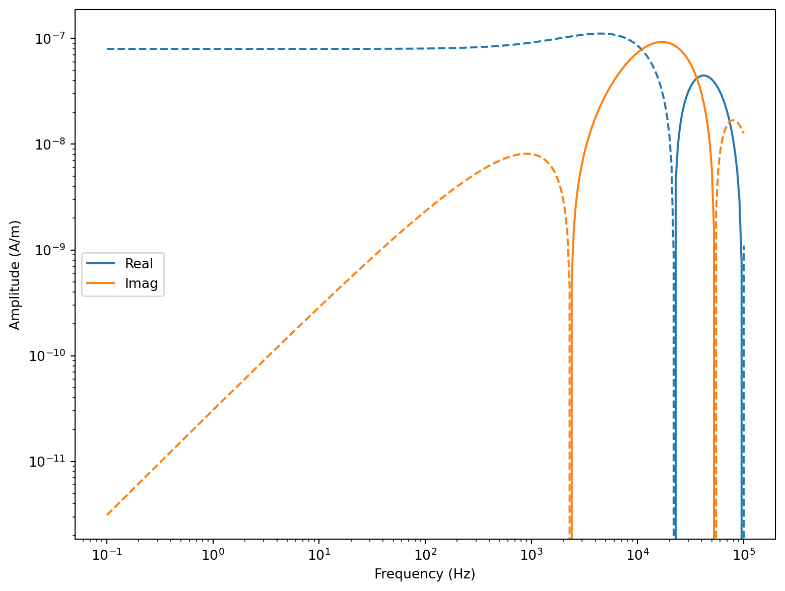

Show the code
import empymod
import numpy as np
import matplotlib.pyplot as pltWe prepare a working environment with Python and some essential packages. Make sure that the following packages are installed:
numpymatplotlibscipysympyFurther, we will use empymod to generate reference responses. It can be installed with the following commands:
conda install pip
pip install --upgrade empymodempymodWhen in doubt, see the documentation.
The coordinate system is either
import empymod
import numpy as np
import matplotlib.pyplot as pltSurvey paramaters:
freq = np.logspace(-1, 5, 301)
src = [0, 0, 0, 0, 90] # z-dir. source at the origin [x, y, z, azimuth, dip]
rec = [100, 0, 0, 0, 90] # z-dir. receiver 100 m away from source
cond = 0.01Computation using empymod:
inp = {'src': src, 'rec': rec, 'depth': [], 'res': 1/cond, 'verb': 1}
inp['freqtime'] = freq
inp['mrec'] = True
fmm_dip_dip = empymod.loop(**inp)fs = 12
fig = plt.figure(figsize=(8, 6), constrained_layout=True)
plt.plot(freq, fmm_dip_dip.real, 'C0-', label='Real')
plt.plot(freq, -fmm_dip_dip.real, 'C0--')
plt.plot(freq, fmm_dip_dip.imag, 'C1-', label='Imag')
plt.plot(freq, -fmm_dip_dip.imag, 'C1--')
plt.xscale('log')
plt.yscale('log')
plt.xlabel('Frequency (Hz)', fontsize=fs-2)
plt.ylabel('Amplitude (A/m)', fontsize=fs-2)
plt.legend()
Survey parameters for a 3-layer model:
Make plots for
Notes:
mrec=False to force the calculation of electric fieldssrc and rec, resp.)Survey parameters for the 5-layer model after Siemon et al. (2009):
Calculate the HEM responses in terms of real part \(R\) and quadrature part \(Q\) in ppm!